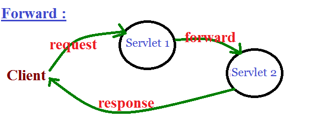
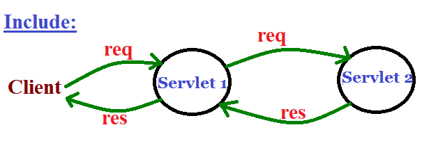
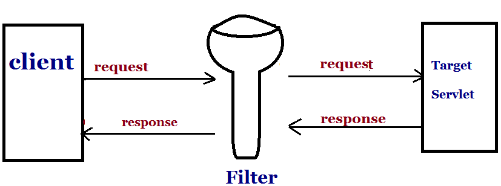
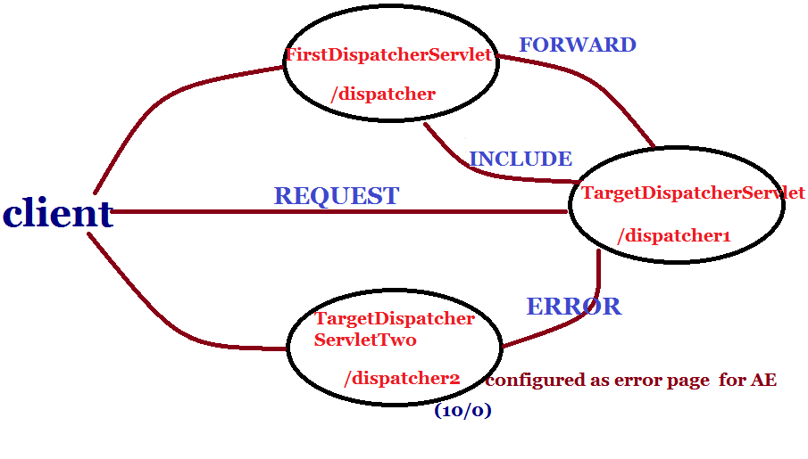
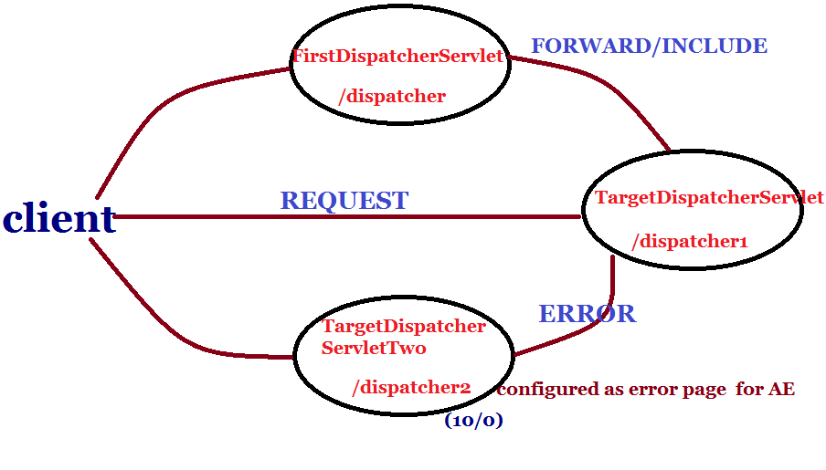
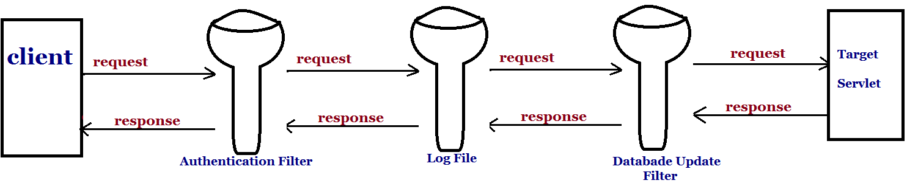
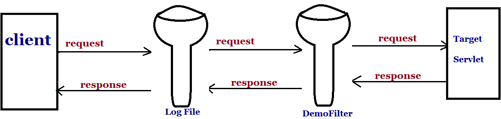
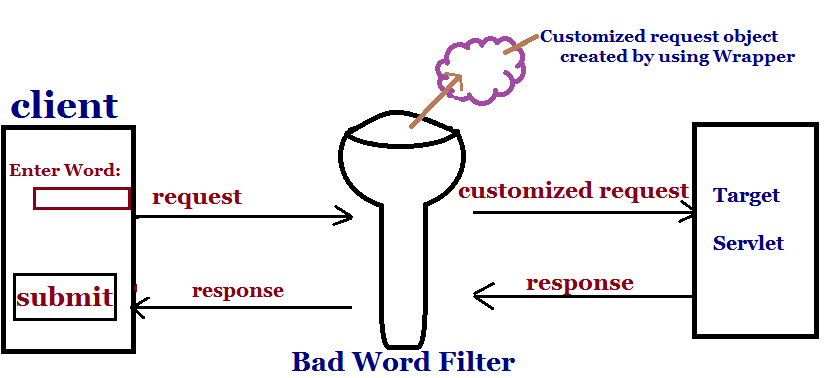

Web Container ModelAgenda:
ServletContext parameter :For the ServletContext initialization parameter.
We can retrive ServletContext parameters by using ServletContext object for that purpose ServletContext interface defines the following methods for accessing context initialization parameters.
Demo program to display context initialization parameters :
public class FirstServlet extends HttpServlet {
public void doGet(HttpServletRequest request, HttpServletResponse response)
throws ServletException, IOException {
PrintWriter out=response.getWriter();
ServletContext context=this.getServletConfig().getServletContext( );
Enumeration enum=context.getInitParameterNames( );
while(enum.hasMoreElements()){
String paramValue=(String)enum.getInitParameter(paramName);
out.println(paramName+" ... "+paramValue);
}
}
web.xml
<web-app>
<context-param>
<param-name>user</param-name>
<param-value>scott</param-value>
</context-param>
<context-param>
<param-name>pwd</param-name>
<param-value>tiger</param-value>
</context-param>
<servlet>
<servlet-name>first</servlet-name>
<servlet-class>FirstServlet</servlet-class>
<init-param>
<param-name></param-name>
<param-value></param-value>
</init-param>
</servlet>
<servlet-mapping>
<servlet-name>first</servlet-name>
<url-pattern>/fs</url-pattern>
</servlet-mapping>
</web-app>
Note : With in the Servlet if we can call getInitParameter() directly then it provides Servlet initialization parameters but not ServletContext parameters , hence initparameters by default Servlet initialization parameters. Note:We can Access Servlet initialization parameters in the following ways .
String value=getInitParameter("movie");
String value=getServletConfig( ).getInitParameter("movie");
We can Access context initialization parameters in the following ways .
String value=getServletContext( ).getInitParameter("movie");
String value=getServletConfig( ).getServletContext( ).getInitParameter("movie");
Note: Whether Servlet or context init-parameters , these are deploy time constants i.e., from the Servlet , we can read their values but we are not allow to modify i.e., we have only getter()'s but not setter()'s Comparision between Servlet init & context initialization parameters :
Servlet Scopes :Objective : For the fundamental Servlet attribute scopes. (Request, session & context )
Attribute : Place holder to store the information with in the web-application. The main purpose of these parameters are to bring information from outside environment into the Servlet , and these are read-only . Based on our requirement we can't create a new parameter , we can't modify and we can't remove existing parameters with in the Servlet. Here we can't use parameters to store and share information between the components of application.To handle this requirement sun people introduced attributes concept. Based on our requirement we can create a new attribute , we can modify and remove existing attributes. Hence attributes concept is best suitable to store and share information between the components of web-application. Based on our requirement , we have to store this attributes into the proper scopes. There are 3 scopes are possible in the Servlets .
Request Scope :
Note:
Session Scope :
Application Scope (or) Context Scope :
Multithreading issues associated with each scope :
Parameters are key-value pairs . Both key & value are String objects. Hence at the time of retrieval it is not required to perform any type -casting . We can assign directly parameter value to the String type variable without performing any type-casting.
String pvalue=request.getParameter("user");
String pvalue=request.getInitParameter("user");
Attributes also key-value pairs but keys are String type and values can be any Object type. Hence at the time of retrival. Compulsary we should perform type-casting.
String value = request.getAttribute("user");
CompiletimeError:Incompatible types
found:java.lang.Object
required:java.lang.String
String value=(String)request.getAttribute("user"); IIQ: To access the value of request scoped attribute user, which of the following is valid ?
public class FirstServlet extends HttpServlet {
StringBuffer buffer1=new StringBuffer("raja");
static StringBuffer buffer2=new StringBuffer();
public void doGet(HttpServletRequest request, HttpServletResponse response)
throws ServletException, IOException {
StringBuffer filter=new StringBuffer();
HttpSession session=request.getSession();
}
The above example which of the following are Thread Safe ?
Differences between parameters and attributes :
CustRequest.java
public class CustRequest extends HttpServletRequestWrapper{
public CustRequest(HttpServletRequest request) {
super(request);
}
public String getString(String word){
String word1=super.getParameter(word);
if(word1.equals("java")|| word1.equals("scjp"))
return word;
else
return word1;
}
}
TargetServlet.java
public class TargetServlet extends HttpServlet {
public void doGet(HttpServletRequest request, HttpServletResponse response)
throws ServletException, IOException {
PrintWriter out = response.getWriter();
String word=((ServletRequest) response).getParameter("word");
out.println("You typed :"+word);
}
}
Demo program to print all context scoped attributes:
public class ContextAttributeDemo extends HttpServlet {
public void doGet(HttpServletRequest request, HttpServletResponse response)
throws ServletException, IOException {
PrintWriter out = response.getWriter();
out.println("<h1>Context Attributes </h1>");
ServletContext context=getServletContext();
context.setAttribute("course", "SCWCD");
Enumeration e=context.getAttributeNames();
while (e.hasMoreElements()) {
String aname = (String) e.nextElement();
Object avalue=context.getAttribute(aname);
out.println(aname+"......."+avalue+"<br>");
}
}
}
output :
org.apache.catalina.resources.......
org.apache.naming.resources.ProxyDirContext@50a649
course.......SCWCD
com.sun.faces.config.WebConfiguration.......
com.sun.faces.config.WebConfiguration@d507e9
org.apache.AnnotationProcessor.......
org.apache.catalina.util.DefaultAnnotationProcessor@1fa6d18
For every web-application , web-container always add some attributes in application Scope for its internal purpose. Here context Scoped attributes never be empty.
Ex 2: Write a program to print hit count of the web-application:
|


| public RequestDispatcher getRequestDispatcher("String target") |
The target resource path can be specified either by absolute path (or) relative path.
Example:
RequestDispatcher rd=request.getRequestDispatcher("/test2"); //absolute path
RequestDispatcher rd=request.getRequestDispatcher("test2"); //relative path
If the target resource is not available then we will get 404 status code saying requested resource is not available.
By ServletContext object :
ServletContext interface defines the following 2 methods to get the RequestDispatcher object.| public RequestDispatcher getRequestDispatcher("String target"); |
Ex:
RequestDispatcher rd=context.getRequestDispatcher("/test2"); //valid because absolute path
RequestDispatcher rd=context.getRequestDispatcher("test2"); //IllegalArgumentException because relative path
If the target resource is not available , then we will get 404 status code.
| public RequestDispatcher getNamedDispatcher("String servletName") ; //in this servletName is logicalname |
- If URL pattern is not defined for the target Servlet then we have to use this method.
- The argument represents the value associated with Servlet name tag in web.xml which represents logical name of the Servlet.
- If the target Servlet is not available then we will get null but not 404 status code .On that null if we are trying to perform forward (or) including we will NullPointerException.
| RequestDispatcher rd=context.getNamedDispatcher("targetServlet"); //in this targetServlet is logicalname |
Differences between getting RequestDispatcher by ServletRequest & ServletContext :
| RequestDispatcher from ServletRequest | RequestDispatcher from ServletContext |
|---|---|
| RequestDispatcher rd = request.getRequestDispatcher("/test2"); RequestDispatcher rd = request.getRequestDispatcher("test2"); The target resource can be specified either by absolute path (or) relative path. |
RequestDispatcher rd = context.getRequestDispatcher("/test2"); The target resource should be specified only by absolute path but not relative path. Otherwise we will get IllegalArgumentException. |
| We can use this RequestDispatcher to communicate only with in the same application | We can use this to communicate either with in the same or outside of the application . But recommended to use to communicate outside of the web-application |
| We can't get RequestDispatcher by <servlet-name> tag | We can get RequestDispatcher by <servlet-name> for this we have getNamedDispatcher( ) |
Note : <servlet-mapping> tag is optional to configure servlet with in the web.xml , that time nobody can access that servlet directly from browser, in that case the remaining servlets can communicate by using it's logical name.
RequestDispatcher's methods :
RequestDispatcher interface defines the following 2 methods.- public void forward(ServletRequest request, ServletResponse response) throws ServletException, IOException
- public void include(ServletRequest request, ServletResponse response) throws ServletException, IOException
Forward mechanism :
- If the 1st Servlet is responsible for some preliminary processing & 2nd Servlet is responsible to provide requirement response then we should go for forward mechanism.
- Just before forwarding response object will be cleared automatically by the web-container . Hence if any response added by the first servlet won't be delivered to the end-user. Only second servlet response will be displayed.
- In forward mechanism second servlet has complete control on response object. Hence it can change response headers like contentType( ) .
- In forward mechanism , the same request object will be forwarded to the second servlet. Hence information sharing between the components is always possible in the form of request scoped attributes.
- After forwarding the request to second servlet the control will come to the first servlet again to execute remaining statements. In the remaining statements if we are trying to write anything to the response these statements will be ignored by the web-container. In the remaining statements if any exception raised only that exception information will be displayed for end user instead of second servlet response . i.e., Second servlet response will be delivered after completing remaining statements execution only.
public class ForwardServlet extends HttpServlet {
public void doGet(HttpServletRequest request, HttpServletResponse response)
throws ServletException, IOException {
response.setContentType("text/html");
PrintWriter out = response.getWriter();
out.println("Hello");
RequestDispatcher rd=request.getRequestDispatcher("/forward2");
rd.forward(request,response);
out.println("Hi");
System.out.println(10/0); //-->1
}
}
public class ForwardTwo extends HttpServlet {
public void doGet(HttpServletRequest request, HttpServletResponse response)
throws ServletException, IOException {
response.setContentType("text/html");
PrintWriter out = response.getWriter();
out.println("This is Second Forward Servlet ");
}
}
- If we are sending the request to the FirstServlet, ArithmeticException will be displayed for the end-user instead of second Servlet response.
- If we are commenting line1, then only 2nd Servlet response will be displayed for the end-user.
- Recursive forward call always raises RuntimeException saying StackOverFlowError.
Ex:
public class ForwardTwo extends HttpServlet {
public void doGet(HttpServletRequest request, HttpServletResponse response)
throws ServletException, IOException {
response.setContentType("text/html");
PrintWriter out = response.getWriter();
out.println("This is Forward Servlet ");
out.flush();
RequestDispatcher rd=request.getRequestDispatcher("/forward");
rd.forward(request, response);
// ---life cycle will start to the second servlet
}
}
We can pass Query String as part of forward mechanism
public class ForwardTwo extends HttpServlet {
public void doGet(HttpServletRequest request, HttpServletResponse response)
throws ServletException, IOException {
response.setContentType("text/html");
PrintWriter out = response.getWriter();
out.println("This is Forward Servlet ");
RequestDispatcher rd=request.getRequestDispatcher("/forward?uname=raja&pwdscwcd");
rd.forward(request, response);
}
}
public class ForwardServet extends HttpServlet {
public void doGet(HttpServletRequest request, HttpServletResponse response)
throws ServletException, IOException {
response.setContentType("text/html");
PrintWriter out = response.getWriter();
String name=request.getParameter("uname");
String pwd=request.getParameter("pwd");
out.println(name+"........."+pwd);
}
}
login.html
<form action="/servlet/vs"> <table> <tr><td>Name :</td><td> <input type="text" name="uname"></td></tr> <tr><td>Password : </td><td> <input type="text" name="pwd"></td></tr> <tr><td><input type="submit" value="submit"></td></tr> </table> </form>ValidateServlet.java
public class ValidateServlet extends HttpServlet {
public void doGet(HttpServletRequest request, HttpServletResponse response)
throws ServletException, IOException {
response.setContentType("text/html");
PrintWriter out = response.getWriter();
out.println("Validate Servlet");
String name=request.getParameter("uname");
String pwd=request.getParameter("pwd");
if(name.equalsIgnoreCase("raja")&&pwd.equalsIgnoreCase("scwcd")){
RequestDispatcher rd=getServletContext().getRequestDispatcher("/inbox.jsp");
rd.forward(request, response);
}
else {
RequestDispatcher rd=request.getRequestDispatcher("error.jsp");
rd.forward(request, response);
}
}
}
error.jsp
Invalid Credentials , please login here <a href="login.html">LOGIN</a>index.jsp
<h1>Successful Login</h1>
- Attributes added by web-container while forwarding the request.
- While forwarding the request from one Servlet to another , web-container will always add some attributes in request scope to provide Original request information to the second Servlet.
- javax.servlet.forward.request-uri
- javax.servlet.forward.context-parh
- javax.servlet.forward.servlet-path
- javax.servlet.forward.path-info
- javax.servlet.forward.query-string
- If we are getting RequestDispatcher by using getNamedDispatcher , the web-container won't add any attributes in request scope.
- With in the same Servlet we can't call forward more than once directly . Otherwise we will get IllegalStateException.
Include mechanism :
- In several components required some common functionality, Its never recommended to hardcode that functionality in every component. We have to separate component and we have to make that functionality available by using include mechanism for every component.
- This approach promotes code re-usability and reduces maintainability problems.
- Hence the maintain objective of include mechanism is to include the response of other resourses in the current response . This include is best suitable for JSP to include Headers and Footers , Banner information and Logos etc.
- In the include mechanism the first Servlet is responsible to provide total response . But it can include the response of some other components.
- In the Include, second servlet doesn't have complete control on the response object. It is not allowed to change response headers , If it is trying to change these changes will be ignored by web-container.
public class IncludeServlet extends HttpServlet {
public void doGet(HttpServletRequest request, HttpServletResponse response)
throws ServletException, IOException {
response.setContentType("text/html");
PrintWriter out = response.getWriter();
out.println("First Include Servlet <br>");
RequestDispatcher rd=request.getRequestDispatcher("/include2");
rd.include(request, response);
out.println("First Include Servlet Again ");
}
}
public class IncludeTwo extends HttpServlet {
public void doGet(HttpServletRequest request, HttpServletResponse response)
throws ServletException, IOException {
response.setContentType("text/html");
PrintWriter out = response.getWriter();
out.println("Include Second Servlet <br>");
}
}
When ever we are sending the request to IncludeServlet the following is the output :
First Include Servlet Include Second Servlet First Include Servlet AgainAfter committing the response we can call include( ) But we can't call forward( ) and sendRedirect( ) .
With in the Servlet we can call include any no. of times . But we can call forward( ) only once and mostly as last statement.
Attributes added by Web-container while performing include :
While performing include web-container will add the following attributes in request scope to make original request information available to the second Servlet.- javax.servlet.include.request-uri
- javax.servlet.include.context-parh
- javax.servlet.include.servlet-path
- javax.servlet.include.path-info
- javax.servlet.include.query-string
Differences between forward( ) and include ( ) :
| forward( ) | include( ) |
|---|---|
| s1 ---->forwarding Servlet s2 ---->forwarded Servlet |  s1 ----> including Servlet s2 ----> included Servlet |
| Once first Servlet forwards the request to the second Servlet , second Servlet is completely control on response object , provide the response. | In the case of include first Servlet is responsible to provide required response. |
| While performing forward call the response object will be cleared automatically. Hence FirstServlet response won't be displayed for the end-user. | While performing include, the response object won't be cleared. Hence first servlet response also will be displayed for the end-user. |
| After committing the response we can't perform forward. Otherwise we will get IllegalStateException. | After committing the response we can call include mechanism. |
| With in the same Servlet we can call forward( ) only once and mostly as the last statement. | With in the Servlet we can call include( ) any no. of times. |
| In the case of forward( ) , second Servlet has complete control on the response object. | In the case of include , 2 ndServlet doesn't have complete control on the response object. It is not allowed to change response headers. |
| forward mechanism we can use frequently in Servlets because it is associated with processing. | Include mechanism we can use frequently in JSP's , Because it is associated with view part. |
Foreign RequestDispatcher :
Inside Servlet1 :
ServletContext context=getServletContext( );
ServletContext fcontext=context.getServletContext("/webapp2");
RequestDispatcher rd=fcontext.getRequestDispatcher("/test2");
rd.forward(req , res );
- By default most of the webservers including Tomcat won't provide support for cross context communication.
- In this case getRequestDispatcher( ) returns null, on that null if we are trying call forward( ) (or ) include( ) we will get NullPointerException.
- To provide support for cross context communication at Server level some configuration changes are required.
- As RequestDispatcher mechanism will work with in the same server. Hence both the applications should be deployed in the same Server.
- What is the purpose of RequestDispatcher ?
- Explain RequestDispatcher mechanism ?
- Differences between context.getRequestDispatcher() & context.getNamedDispatcher( ) ?
- Various possible ways to get RequestDispatcher ?
- Differences betwee forward & sendRedirection ?
- What is the Difference betwee forward & include ?
- What is foreign RequestDispatcher and how we can get ?
- Explain RequestDispatcher mechanism between 2 applications of the same Server ?
- What are the attributes added by the web-container while forwarding and including the request ?
- What is the purpose of these attributes & explain its meaning ?
FILTERS (servlet 2.3 v) :
Objective :- Describe web-container request processing model.
- Write and configure a filter.
- Create a request and response Wrapper for the given design problem.
- If we want to perform any activity at the time of pre-processing and post-processing of the request. Then we should go for Filters.
- This concept introduced in Servlet 2.3 version.
The most common application areas of Filter are...
- Logging
- Security checks like Authentication & Authorization
- Altering request information
- Altering response information
- Compression of response
- Encryption of response etc.
FILTER- API :
We can develop Filters concept by using the following 3 interfaces.- Filter
- FilterConfig
- FilterChain
Filter :
Every Filter in java should implement Filter interface either directly or indirectly.Filter interface defines the following 3 methods.
- init( ) :
This method will be executed only once to perform initialization activity after instantiation immediately.public void init(FilterConfig config) throws ServletException - destroy( ) :
This method will be executed only once to perform CleanUp activities , just before taking the Filter from out of Serice.public void destroy( ) - doFilter( ) :
This method will be executed for every request, Entire Filtering logic we have to define in this method only.public void doFilter(ServletRequest request , ServletResponse response, FilterChain chain) throws ServletException, IOException
We can use FilterChain object to forward the request to the next level . It can be another Filter (or) Servlet.
FilterConfig :
- For every Filter, web-container creates one FilterConfig object to hold its configuration information.
- Web-container handover FilterConfig object to the Filter as argument to init( ) method .
- public String getFilterName( );
Returns logical name of the Filter configured in web.xml by using <filter-name > tag . - public String getInitParameter(String parameter)
- public Enumeration getInitParameterNames( )
- public ServletContext getServletContext( )
FilterChain :
- We can use FilterChain to forward the request to the next level.[It may be another filter (or) Servlet ].
- FilterChain interface defines the following doFilter( ).
public void doFilter(ServletRequest request, ServletResponse response )throws ServletException, IOException
public class FirstFilter implements Filter {
public void init(FilterConfig config) throws ServletException {
}
public void doFilter(ServletRequest request, ServletResponse response,
FilterChain chain) throws IOException, ServletException {
PrintWriter out=response.getWriter();
out.println("This is First Filter before processing the request
i.e., pre-processing");
chain.doFilter(request, response);
out.println("This is First Filter after processing the request
i.e., post-processing");
}
public void destroy() {
}
}
public class TargetServletFilter extends HttpServlet {
public void doGet(HttpServletRequest request, HttpServletResponse response)
throws ServletException, IOException {
response.setContentType("text/html");
PrintWriter out = response.getWriter();
out.println("This is Target Servlet Filter ");
}
}
Analysis :

- When ever we are Sending the request to the Servlet , web-container checks is any Filter configured for this Servlet (or) not
- If any Filter is configured web-container forwards the request to the Filter instead of Servlet.
- After completing Filtering logic Filter forwards the request to the TargetServlet.
- After processing the request by TargetServlet the response will be forwarded to the Filter instead of browser.
- After executing Filtering logic , Filter forwards the total response to the end-user .
Configuring Filter in web.xml :
<servlet>
<servlet-name>TargetServletFilter</servlet-name>
<servlet-class>jobs.TargetServletFilter</servlet-class>
</servlet>
<servlet-mapping>
<servlet-name>TargetServletFilter</servlet-name>
<url-pattern>/tsfilter</url-pattern>
</servlet-mapping>
<filter>
<filter-name>firstfilter</filter-name>
<filter-class>jobs.FirstFilter</filter-class>
</filter>
<filter-mapping>
<filter-name>firstfilter</filter-name>
<url-pattern>/tsfilter</url-pattern>
</filter-mapping>
Note: The life cycle of a Filter will start at the time of application deployment (or) Server startup.i.e., Filter class loading, instantiation and execution of init( ) will be performed automatically at the time of either application deployment or Server StartUp. Hence load-on-startup concept is not applicable for Filters.
Web-container is responsible to perform instantiation of the Filter for this it always calls public no-argument constructor . Hence every Filter class should compulsory contain public no-argument constructor.
Mapping of Filter :
We can map a Filter either for a particular url-pattern (or) to a particular Servlet (or) to the whole web-application.Mapping to a particular url-pattern :
<filter-mapping> <filter-name>DemoFilter<filter-name> <url-pattern>/test</url-pattern> </filter-mapping>When ever we are sending a request for with specified url-pattern then only Filter will be executed.
Mapping to a particular Servlet :
<filter-mapping> <filter-name>DemoFilter</filter-name> <servlet-name>TargetServlet</servlet-name> </filter-mapping>Once Servlet got the request automatically Filter will be executed.
Filter mapping to entire web-application :
For any request to the web-application , whether it is for Servlet or JSP , this Filter will be executed.Note: Mapping a Filter to the whole web-application is possible from Servlet 2.5 version onwards only.
<dispatcher> :
A servlet can get the request in one of the following possible ways.
A request directly from the browser. (REQUEST ) By RequestDispatcher 's forward call. (FORWARD) By RequestDispatcher's include call. (INCLUDE ) By RequestDispatcher's error call. (ERROR)
- By default Filter will be executed only for direct end-user request, and won't be executed for RequestDispatcher's forward & include and error-page calls.
- But in Servlet 2.4 version Sun people introduced <dispatcher> to extend Filter concepts for remaining cases also. i.e., for which type of request Filter will be executed is decided by < dispatcher > tag.
- REQUEST
- FORWARD
- INCLUDE
- ERROR
<filter-mapping> <filter-name>DemoFilter</filter-name> <url-pattern>/test</url-pattern> <dispatcher>REQUEST</dispatcher> <dispatcher>FORWARD</dispatcher> </filter-mapping>In this case Filter won't be executed for RequestDispatcher's INCLUDE call and ERROR page call.
Ex 2 : To execute a Filter only for RequestDispatcher's include call we have to configure <filter-mapping> as follows.
<filter-mapping> <filter-name> <url-pattern> <dispatcher>INCLUDE</dispatcher> </filter-mapping>When ever we are Using <dispatcher> tag, then default behaviour won't be reflected. i.e., we are Overriding default-behaviour by using <dispatcher> tag.
Demo Program :

FirstDispatcherServlet.java
public class FirstDispatcherServlet extends HttpServlet {
public void doGet(HttpServletRequest request, HttpServletResponse response)
throws ServletException, IOException {
response.setContentType("text/html");
PrintWriter out = response.getWriter();
out.println("First Dispatcher Servlet Pre-processing<br>");
RequestDispatcher rd=request.getRequestDispatcher("/dispatcher1");
rd.include(request, response);
out.println("<br>First Dispatcher Servlet Post-processing<br>");
}
}
TargetDispatcherServlet.java
public class TargetDispatcherServlet extends HttpServlet {
public void doGet(HttpServletRequest request, HttpServletResponse response)
throws ServletException, IOException {
response.setContentType("text/html");
PrintWriter out = response.getWriter();
for(int i=0;i<5;i++)
out.println("<br>This is Target Dispatcher Servlet"+i+"<br>");
}
}
TargetDispatcherServletTwo.java
public class TargetDispatcherServletTwo extends HttpServlet {
public void doGet(HttpServletRequest request, HttpServletResponse response)
throws ServletException, IOException {
response.setContentType("text/html");
PrintWriter out = response.getWriter();
out.println(10/0);
}
}
DispatcherFilter.java
public class DispatcherFilter implements Filter {
public void destroy() {
System.out.println("Destroy method");
}
public void doFilter(ServletRequest request, ServletResponse response,
FilterChain chain) throws IOException, ServletException {
PrintWriter out=response.getWriter();
out.println("<br>This is First Filter before processing the request
i.e., pre-processing<br>");
chain.doFilter(request, response);
out.println("<br>This is First Filter after processing the request
i.e., post-processing<br>");
}
public void init(FilterConfig config) throws ServletException {
System.out.println("Filter init method");
}
}
We can configure more than one Filter for a TargetServlet and all these Filters will be executed one by one and forms FilterChain.

Demo program :

Note : The log information will be stored in the following file locating in logs folder of Tomcat.(localhost.2013.04.16.txt........date)
Web-container's rule for ordering of Filters in FilterChain :
- Identify all Filters which are configured according to url-pattern and Execute all these filters from top to bottom .
- Identify all Filters which are configured according to servlet-name and execute all these Filters from top- to- bottom.
i.e., The Filters which are configured by url pattrens will get high priority when compared with Filters which are configured by servlet-name.
<filter-mapping> <filter-name>Filter1</filter-name> <url-pattern>/Recipes/*</url-pattern> </filter-mapping> <filter-mapping> <filter-name>Filter2</filter-name> <url-pattern>/Recipes/HotList.do</url-pattern> </filter-mapping> <filter-mapping> <filter-name>Filter3</filter-name> <url-pattern>/Recipes/Add/*</url-pattern> </filter-mapping> <filter-mapping> <filter-name>Filter4</filter-name> <url-pattern>/Recipes/Modify/Modify.do</url-pattern> </filter-mapping> <filter-mapping> <filter-name>Filter5</filter-name> <url-pattern>*</url-pattern> </filter-mapping>
| Request URI | Order of Execution |
|---|---|
| /Recipes/HotList.do | Filter 1,5,2 |
| /Recipes/HotReport.do | Filter 1,5 |
| /HotList.do | Filter 5 |
| /Recipes/Modify/Modify.do | Filter 1,5,4 |
| /Recipes/Add/AddRecipes.do | Filter 1,3,5 |
Difference between Filter's doFilter() and FilterChain's doFilter() :
| Filter's doFilter( ) | FilterChain's doFilter( ) |
|---|---|
| public void doFilter(ServletRequest request , ServletResponse response , FilterChain fc) throws ServletException, IOException | public void doFilter(ServletRequest request , ServletResponse response ) throws ServletException, IOException |
| We can use this method to define entire filtering logic. | We can use this method to forward request to the next level. |
| This doFilter( ) is a callback method because web-container will call this method automatically for every request. | It is a inline method because we have to call this method explicitly then only it will be executed . |
Wrappers :
- Some times it is required to alter request and response information in filters , we can achieve this by using Wrapper class.
Ex 1: With in the filter we have to convert end-users resume format from PDF to DOC file , We can achieve this by Wrapper.
Ex 2: In the filter we have to compress the response and we can send that compressed response to the end-user. So that we can reduce download time, We can achieve this by using Wrapper.
- RequestWrapper
- ResponseWrapper
RequestWrapper :
- To alter request information
- ServletRequestWrapper
- HttpServletRequestWrapper
ResponseWrappers :
- To alter response information
- ServletResponseWrapper
- HttpServletResponseWrapper
Demo program for RequestWrapper :
(Sending the duplicate manager instead of original manager to the estate )
- End user enter the word and click the submit button.
- Web-container forwards the request to the filter instead of Servlet.
- Filter creates a customized request object by using Wrapper.
- Filter forwards that customized request object to the target Servlet instead of Origial request.
- With in the target Servlet if we are applying any operation on the request object our own customized behaviour will be reflected. but not original request behaviour.
- Target Servlet prepares the response & forward to filter instead of browser.
- Filter forwards that response to the end-user.
Demo Program :
wrapper.html<form action="./wrapper"> Enter Word : <input type="text" name="word"><br> <input type="submit" value="submit"> </form>BadWordWrapperFilter.java
public class BadWordWrapperFilter implements Filter {
public void destroy() {
System.out.println("destroy method");
}
public void doFilter(ServletRequest request, ServletResponse response,
FilterChain chain) throws IOException, ServletException {
CustomizeWrapperRequest myRequest=new
CustomizeWrapperRequest((HttpServletRequest) request);
chain.doFilter(myRequest, response);
}
public void init(FilterConfig config) throws ServletException {
System.out.println("init method");
}
}
CustomizeWrapperRequest.java
public class CustomizeWrapperRequest extends HttpServletRequestWrapper {
public CustomizeWrapperRequest(HttpServletRequest request) {
super(request);
}
public String getParameter(String x) {
String word1=super.getParameter(x);
if(word1.equalsIgnoreCase("java") || word1.equalsIgnoreCase("scjp") ){
return "SLEEP";
}
else {
return word1;
}
}
}
TargetWrapperServlet.java
public class TargetWrapperServlet extends HttpServlet {
public void doGet(HttpServletRequest request, HttpServletResponse response)
throws ServletException, IOException {
response.setContentType("text/html");
PrintWriter out = response.getWriter();
String word=request.getParameter("word");
out.println("The Entered word is :"+word);
}
}
Write a Demo program for response wrapper :

ResponseWrapperFilter.java
public class ResponseWrapperFilter implements Filter {
public void destroy() {
System.out.println("Response Wrapper destroy");
}
public void doFilter(ServletRequest request, ServletResponse response,
FilterChain chain) throws IOException, ServletException {
CustomizeWrapperResponse myReponse=new CustomizeWrapperResponse(
(HttpServletResponse) response);
chain.doFilter(request, myReponse);
String text=myReponse.toString();
if(text!=null)
text=text.toUpperCase();
response.getWriter().write(text);
}
public void init(FilterConfig config) throws ServletException {
System.out.println("Response Wrapper init");
}
}
CustomizeWrapperResponse.java
public class CustomizeWrapperResponse extends HttpServletResponseWrapper {
protected CharArrayWriter charWriter;
protected PrintWriter writer;
public CustomizeWrapperResponse(HttpServletResponse response) {
super(response);
charWriter=new CharArrayWriter();
}
public PrintWriter getWriter() throws IOException {
if(writer!=null){
return writer;
}
return writer=new PrintWriter(charWriter);
}
public String toString() {
String text=null;
if(writer!=null) {
text=charWriter.toString();
}
return text;
}
}
TargetResponseWrapperServlet.java
public class TargetResponseWrapperServlet extends HttpServlet {
public void doGet(HttpServletRequest request, HttpServletResponse response)
throws ServletException, IOException {
response.setContentType("text/html");
PrintWriter out = response.getWriter(); //customize response
out.println("Hi Ashok , Wrappers are very easy ");
}
}
In the above program some implementations required
- We have to override getOutputStream() method.
- Suppose if we are getting PrintWriter and ServletOutputStream , we have to handle "IllegalStateException".
- Usage Filter concept in our web application is considered as following "Intercepting Filter Design Pattern".
- Usage of wrapper concept in our web application is considered as "Decorator Design Pattern".
all programs web.xml
<web-app>
<servlet>
<servlet-name>FirstServlet</servlet-name>
<servlet-class>jobs.FirstServlet</servlet-class>
</servlet>
<servlet-mapping>
<servlet-name>FirstServlet</servlet-name>
<url-pattern>/fs</url-pattern>
</servlet-mapping>
<servlet>
<servlet-name>CustRequest</servlet-name>
<servlet-class>jobs.CustRequest</servlet-class>
</servlet>
<servlet-mapping>
<servlet-name>CustRequest</servlet-name>
<url-pattern>/cr</url-pattern>
</servlet-mapping>
<servlet>
<servlet-name>TargetServlet</servlet-name>
<servlet-class>jobs.TargetServlet</servlet-class>
</servlet>
<servlet-mapping>
<servlet-name>TargetServlet</servlet-name>
<url-pattern>/ts</url-pattern>
</servlet-mapping>
<servlet>
<servlet-name>ContextAttributeDemo</servlet-name>
<servlet-class>jobs.ContextAttributeDemo</servlet-class>
</servlet>
<servlet-mapping>
<servlet-name>ContextAttributeDemo</servlet-name>
<url-pattern>/cad</url-pattern>
</servlet-mapping>
<servlet>
<servlet-name>HitCountDemo</servlet-name>
<servlet-class>jobs.HitCountDemo</servlet-class>
</servlet>
<servlet-mapping>
<servlet-name>HitCountDemo</servlet-name>
<url-pattern>/hcd</url-pattern>
</servlet-mapping>
<servlet>
<servlet-name>SessionCount</servlet-name>
<servlet-class>jobs.SessionCount</servlet-class>
</servlet>
<servlet-mapping>
<servlet-name>SessionCount</servlet-name>
<url-pattern>/sc</url-pattern>
</servlet-mapping>
<servlet>
<servlet-name>UserCount</servlet-name>
<servlet-class>jobs.UserCount</servlet-class>
</servlet>
<servlet-mapping>
<servlet-name>UserCount</servlet-name>
<url-pattern>/uc</url-pattern>
</servlet-mapping>
<servlet>
<servlet-name>IPAddress</servlet-name>
<servlet-class>jobs.IPAddress</servlet-class>
</servlet>
<servlet-mapping>
<servlet-name>IPAddress</servlet-name>
<url-pattern>/ip</url-pattern>
</servlet-mapping>
<servlet>
<servlet-name>ContextScopeThreadSafe</servlet-name>
<servlet-class>jobs.ContextScopeThreadSafe</servlet-class>
</servlet>
<servlet-mapping>
<servlet-name>ContextScopeThreadSafe</servlet-name>
<url-pattern>/csts</url-pattern>
</servlet-mapping>
<servlet>
<servlet-name>ContextSyncronize</servlet-name>
<servlet-class>jobs.ContextSyncronize</servlet-class>
</servlet>
<servlet-mapping>
<servlet-name>ContextSyncronize</servlet-name>
<url-pattern>/cs</url-pattern>
</servlet-mapping>
<servlet>
<servlet-name>ForwardServlet</servlet-name>
<servlet-class>jobs.ForwardServlet</servlet-class>
</servlet>
<servlet-mapping>
<servlet-name>ForwardServlet</servlet-name>
<url-pattern>/forward</url-pattern>
</servlet-mapping>
<servlet>
<servlet-name>ForwardTwo</servlet-name>
<servlet-class>jobs.ForwardTwo</servlet-class>
</servlet>
<servlet-mapping>
<servlet-name>ForwardTwo</servlet-name>
<url-pattern>/forward2</url-pattern>
</servlet-mapping>
<servlet>
<servlet-name>ValidateServlet</servlet-name>
<servlet-class>jobs.ValidateServlet</servlet-class>
</servlet>
<servlet-mapping>
<servlet-name>ValidateServlet</servlet-name>
<url-pattern>/vs</url-pattern>
</servlet-mapping>
<servlet>
<servlet-name>IncludeServlet</servlet-name>
<servlet-class>jobs.IncludeServlet</servlet-class>
</servlet>
<servlet-mapping>
<servlet-name>IncludeServlet</servlet-name>
<url-pattern>/include</url-pattern>
</servlet-mapping>
<servlet>
<servlet-name>IncludeTwo</servlet-name>
<servlet-class>jobs.IncludeTwo</servlet-class>
</servlet>
<servlet-mapping>
<servlet-name>IncludeTwo</servlet-name>
<url-pattern>/include2</url-pattern>
</servlet-mapping>
<servlet>
<servlet-name>TargetServletFilter</servlet-name>
<servlet-class>jobs.TargetServletFilter</servlet-class>
</servlet>
<servlet-mapping>
<servlet-name>TargetServletFilter</servlet-name>
<url-pattern>/tsfilter</url-pattern>
</servlet-mapping>
<servlet>
<servlet-name>FirstDispatcherServlet</servlet-name>
<servlet-class>jobs.FirstDispatcherServlet</servlet-class>
</servlet>
<servlet-mapping>
<servlet-name>FirstDispatcherServlet</servlet-name>
<url-pattern>/dispatcher</url-pattern>
</servlet-mapping>
<servlet>
<servlet-name>TargetDispatcherServlet</servlet-name>
<servlet-class>jobs.TargetDispatcherServlet</servlet-class>
</servlet>
<servlet-mapping>
<servlet-name>TargetDispatcherServlet</servlet-name>
<url-pattern>/dispatcher1</url-pattern>
</servlet-mapping>
<servlet>
<servlet-name>TargetDispatcherServletTwo</servlet-name>
<servlet-class>jobs.TargetDispatcherServletTwo</servlet-class>
</servlet>
<servlet-mapping>
<servlet-name>TargetDispatcherServletTwo</servlet-name>
<url-pattern>/dispatcher2</url-pattern>
</servlet-mapping>
<servlet>
<servlet-name>TargetWrapperServlet</servlet-name>
<servlet-class>jobs.TargetWrapperServlet</servlet-class>
</servlet>
<servlet-mapping>
<servlet-name>TargetWrapperServlet</servlet-name>
<url-pattern>/wrapper</url-pattern>
</servlet-mapping>
<servlet>
<servlet-name>ResponseWrapperFilter</servlet-name>
<servlet-class>jobs.ResponseWrapperFilter</servlet-class>
</servlet>
<servlet-mapping>
<servlet-name>ResponseWrapperFilter</servlet-name>
<url-pattern>/responsefilter</url-pattern>
</servlet-mapping>
<servlet>
<servlet-name>TargetResponseWrapperServlet</servlet-name>
<servlet-class>jobs.TargetResponseWrapperServlet</servlet-class>
</servlet>
<servlet-mapping>
<servlet-name>TargetResponseWrapperServlet</servlet-name>
<url-pattern>/responsewrapper</url-pattern>
</servlet-mapping>
<filter>
<filter-name>firstfilter</filter-name>
<filter-class>jobs.FirstFilter</filter-class>
</filter>
<filter-mapping>
<filter-name>firstfilter</filter-name>
<url-pattern>/tsfilter</url-pattern>
</filter-mapping>
<filter>
<filter-name>dispatcherfilter</filter-name>
<filter-class>jobs.DispatcherFilter</filter-class>
</filter>
<filter-mapping>
<filter-name>dispatcherfilter</filter-name>
<servlet-name>FirstDispatcherServlet</servlet-name>
<dispatcher>INCLUDE</dispatcher>
<dispatcher>REQUEST</dispatcher>
<dispatcher>FORWARD</dispatcher>
<dispatcher>ERROR</dispatcher>
</filter-mapping>
<filter>
<filter-name>BadWordWrapperFilter</filter-name>
<filter-class>jobs.BadWordWrapperFilter</filter-class>
</filter>
<filter-mapping>
<filter-name>BadWordWrapperFilter</filter-name>
<url-pattern>/wrapper</url-pattern>
</filter-mapping>
<filter>
<filter-name>ResponseWrapperFilter</filter-name>
<filter-class>jobs.ResponseWrapperFilter</filter-class>
</filter>
<filter-mapping>
<filter-name>ResponseWrapperFilter</filter-name>
<url-pattern>/responsewrapper</url-pattern>
</filter-mapping>
<error-page>
<exception-type>java.lang.ArithmeticException</exception-type>
<location>/dispatcher1</location>
</error-page>
</web-app>